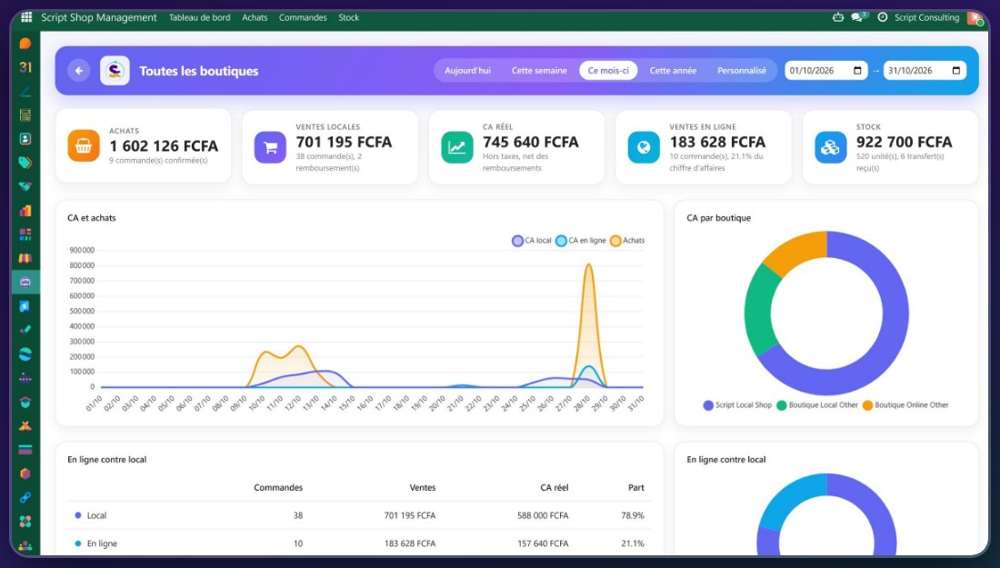
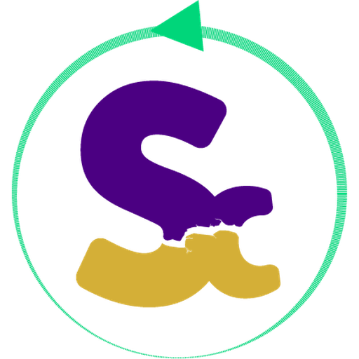
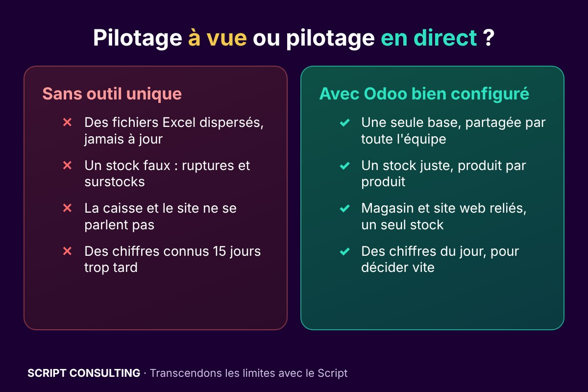
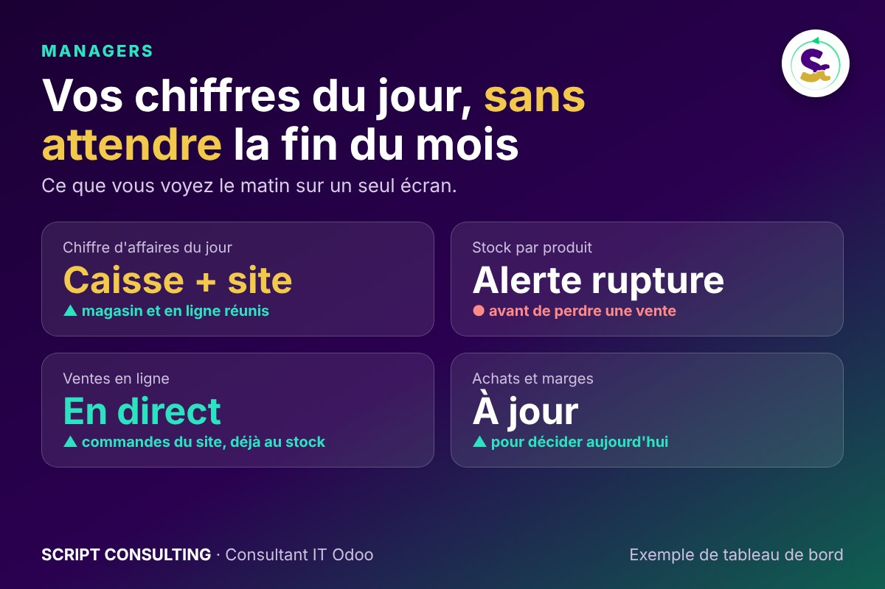
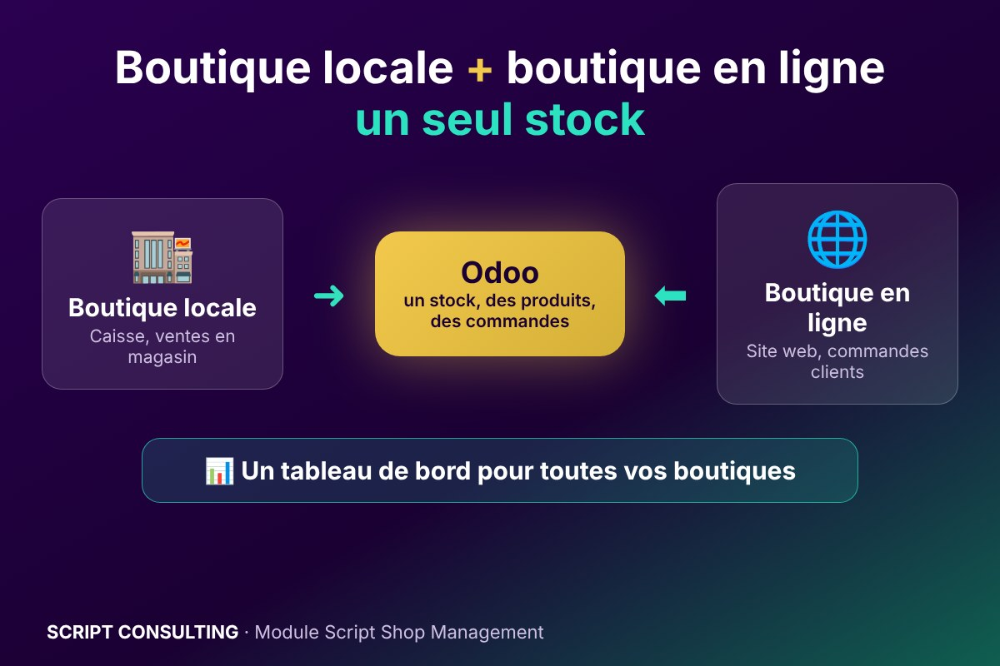
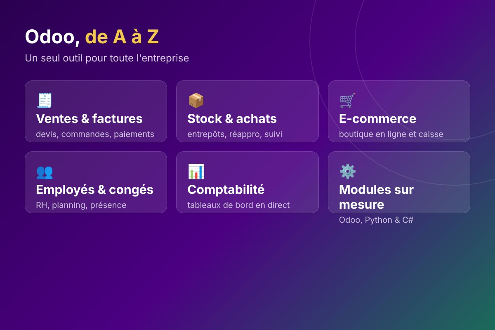
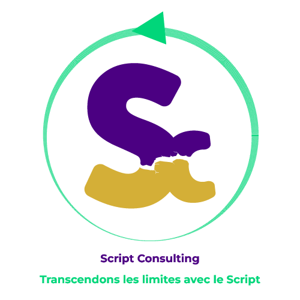

« Mon stock est-il juste ? »
Un stock par produit, mis à jour à chaque vente. Fini les ruptures découvertes par le client et les surstocks qui dorment.
Pour managers et dirigeants · Douala, Cameroun
Ventes, achats, stock, comptabilité, RH, projets, e-commerce : Odoo réunit tous les aspects de votre entreprise. Script Consulting le déploie et l'adapte à votre activité, quelle que soit la version, pour que vous décidiez aujourd'hui, pas dans 15 jours.
Demander un échange Ce que vous gagnez
« Savez-vous, ce soir, combien votre entreprise a vendu aujourd'hui ? »


Pour les managers
Si vous vous reconnaissez dans l'une d'elles, Odoo bien configuré y répond.
Un stock par produit, mis à jour à chaque vente. Fini les ruptures découvertes par le client et les surstocks qui dorment.
Le chiffre d'affaires du jour, magasin et en ligne réunis, visible dès le matin sur un seul tableau de bord.
Factures, paiements et impayés suivis au même endroit, pour relancer à temps et protéger votre trésorerie.
Commandes fournisseurs, réceptions et coûts reliés aux ventes : vous savez ce que chaque produit ou chaque client vous rapporte vraiment.
Une seule source de vérité, des droits d'accès par rôle, et plus de fichiers Excel qui se contredisent.
Ressources humaines, projets, feuilles de temps et notes de frais dans le même outil que vos ventes et votre comptabilité.
Toute l'entreprise, un seul outil
Chaque domaine est relié aux autres : une vente met à jour le stock, la facture et la comptabilité sans ressaisie.

Le vrai changement
Un manager décide mieux quand il voit la même chose que ses équipes, au même moment. Odoo relie vos ventes, votre stock, vos achats et votre comptabilité : l'information circule au lieu d'être recopiée.
Décider vite
Chiffre d'affaires, stock, ventes en ligne, achats : les indicateurs qui comptent pour vous, au même endroit et à jour. Vous réagissez à une rupture, à une baisse ou à une opportunité pendant qu'il est encore temps.

Commerce
Vous vendez en magasin et en ligne ? Avec notre module Script Shop Management, la caisse et le site partagent les mêmes produits, le même stock et le même tableau de bord : ce qui se vend à un endroit se déduit partout.

Ce que nous faisons
De l'analyse de vos besoins à la formation de vos équipes.
Installation, paramétrage et reprise de vos données : ventes, achats, stock, facturation, comptabilité et ressources humaines.
Développement de modules Odoo adaptés à votre métier, comme Script Shop Management pour la gestion multi-boutiques.
Sites de vente en ligne reliés à la caisse et au stock : mêmes produits, mêmes commandes, un seul tableau de bord.
Prise en main d'Odoo par vos équipes, avec des supports clairs et des cas pratiques tirés de votre activité.
Assistance, corrections, migration vers une version plus récente et nouvelles fonctionnalités.
État des lieux de vos processus, choix des modules et feuille de route pour organiser votre gestion.
Odoo Apps Store
Nos modules sont disponibles sur l'Odoo Apps Store sous l'auteur Script Consulting. Nous développons en Python (Odoo) et en C#, et partageons nos réalisations sur GitHub.

Comment nous travaillons
Nous écoutons votre activité et listons vos fichiers, vos habitudes et vos blocages.
Nous paramétrons Odoo et développons ce qui manque, étape par étape.
Vos équipes apprennent sur leurs propres données, pas sur des exemples théoriques.
Nous restons disponibles après la mise en route pour faire évoluer l'outil.
Conseils pour dirigeants
Extraits de nos publications sur les réseaux.
La direction
Script Consulting est dirigé par Maxwell Tematio, consultant IT et développeur Odoo, certifié ITIL 4.2 Foundation, basé à Douala. Sur les réseaux sociaux, il est connu sous le nom Max Temat.
Il travaille au plus près des dirigeants et de leurs équipes : vous échangez directement avec la personne qui configure et développe votre solution.
Notre devise : « Transcendons les limites avec le Script ».

Suivez-nous
Une série vidéo, des conseils chaque jour de semaine et notre code en accès libre.
Questions fréquentes
Oui. Odoo couvre les ventes, le stock, les achats, la comptabilité, les ressources humaines et l'e-commerce, et s'adapte aussi bien à un commerce qu'à une entreprise de services. Nous commençons par comprendre votre activité avant de configurer l'outil.
Toutes les versions d'Odoo, des plus anciennes aux plus récentes. Nous choisissons avec vous la version adaptée et nous gérons aussi les migrations.
Oui. Avec notre module Script Shop Management, la caisse et la boutique en ligne partagent un même stock et un même tableau de bord.
Oui. La formation se fait sur vos propres données, avec des cas pratiques tirés de votre activité, et nous restons disponibles après la mise en route.
Écrivez-nous sur WhatsApp ou par e-mail : le premier échange est sans engagement.
Racontez-nous votre activité : réponse rapide, premier échange sans engagement.
Script Consulting · Maxwell Tematio, directeur · Douala, Cameroun